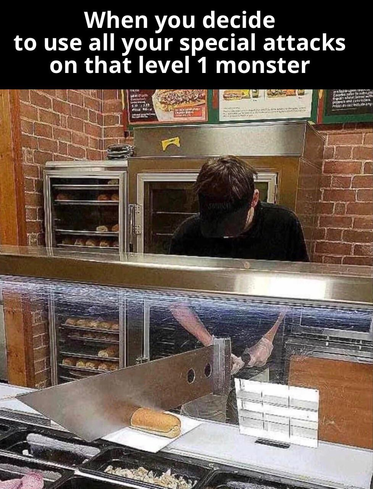
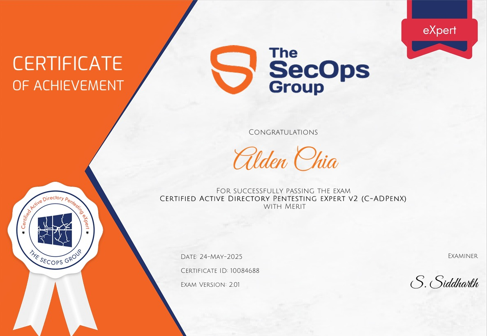
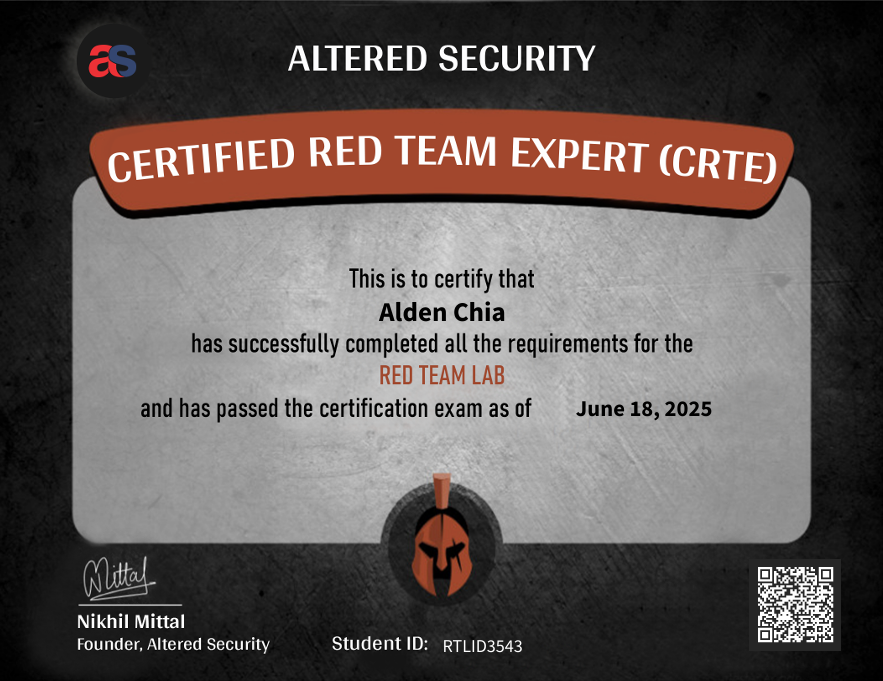
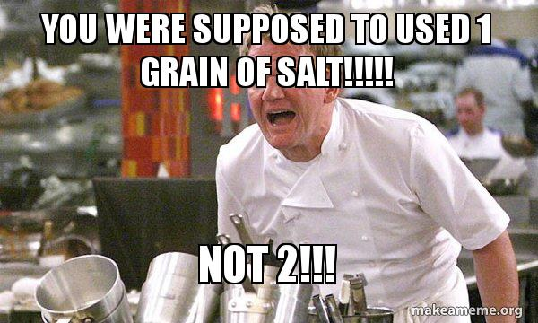

man ctrl_alt_certified
While starting my internship in September 2024, I decided to dive deep into offensive security (Yes, during my internship). Inspired by my peers, I took my first step into the never-ending rabbit hole of offensive security certifications.
In this first post, I'll share my experience grinding through basic to intermediate-level certifications and rating them from a noob's perspective. I will also do some comparisions and answer some FAQs.
The goal? To share my certification journey, give honest reviews, and help fellow beginners navigate the offensive path 💪💪.
All certifications were paid for out of my pocket to make sure I stay committed and don't slack off. RIP intern allowance...
whoami
Hiii, I'm Alden! I recently graduated from Singapore Polytechnic with a Diploma in Information Security Management (now called Cybersecurity and Digital Forensics).
Since starting cybersecurity in 2022, I've explored various domains in school, but offensive security always intrigued me. That curiosity eventually led me to hands-on labs, CTFs, and certification grinds 🫠.
date
At the time of writing, I've just wrapped up my CRTE report (about 2.5 weeks ago) and treated myself to some couch potato time. Decided that it was time to grind again.
tree ~/certs
Coming from a cybersecurity background through school, I had a decent foundation, but diving into Offensive Security was something I wanted to try for myself. I approach things with a bit of an overkill mindset. I tend to overthink, over-analyze, and go all-in on the certifications. Even if I already know the content, I'll still go through all the materials and complete the labs thoroughly.
That's just my style: squeeze out every bit of value, and go overkill. Meanwhile, my friends' approach? "Learn during the exam 😄".

Before diving into the mini-reviews, I would like to emphasize that the ratings are purely based on my personal experience. Everyone learns differently, so take them with a grain of salt.
eJPTv2 (October 2024)
249 USD

This was my first certification. Before that, I had done some HTB, TryHackMe rooms, and taken an ethical hacking module in school.
I studied for 73 hours over 35 days and finished the exam in just over 12 hours (thanks to a missed port scan... oops😒).
| Materials | Lab | Exam | |
|---|---|---|---|
| Rating | 6/10 | 6/10 | 7/10 |
| Reasoning | Beginner-friendly but slow-paced. Good coverage, though most of it felt like a recap for me. | Mostly followed the videos. A bit too guided and repetitive with little room for thinking. | Fun for a first-timer, but attack paths were simple and felt repetitive in hindsight. |
Although I had prior knowledge, eJPT was a solid confidence booster. Highly recommended for beginners looking to get started in offensive security.
CRTP (December 2024)
249 USD

My first exposure to Active Directory, came in with zero knowledge. I studied for about 92 hours over 35 days, and the exam took me 23 hours.
| Materials | Lab | Exam | |
|---|---|---|---|
| Rating | 7.5/10 | 8/10 | 7.5/10 |
| Reasoning | Clear explanations, but most of the real learning came from hands-on practice. | very enjoyable. Lots of chances to try different attack paths and experiment freely. | Pretty straightforward overall, though I found it tough as a complete beginner. |
I would recommend anyone who wants to try out Active Directory in offensive security, I enjoyed every bit of CRTP. The skill floor might be high, but the skill ceiling is infinite ☺️.
OSCP+ (April 2025)
2599 USD - 520 USD = 2079 USD

OSCP was a major milestone. It took a huge chunk of my internship allowance, but I wanted to get it done early. I spent 318 hours over 96 days preparing and completed the exam in 15 hours, report included.
Since I'm aiming for a career in offensive security in Singapore, having either the OSCP or CREST CRT certification is a baseline requirement.
| Materials | Lab | Exam | |
|---|---|---|---|
| Rating | 6/10 | 7/10 | 6.5/10 |
| Reasoning | The content was thorough but felt quite lengthy at times. | The challenge labs were useful, especially for the AD section, but not particularly enjoyable. | Went fine due to my overkill preparation, but I disliked the live proctoring and got baited by rabbit holes. |
While it's a solid HR bypass certification, I wouldn't recommend paying for it out of pocket unless you have to. There are plenty of other resources that cover similar content on the internet.
Fun fact: I completed OSCP before my 20th birthday🥳
CRTO (May 2025)
£405

GOATED. Took it right before the revamp and PPP pricing. Despite the cost, I'm glad I supported @Rastamouse (wallet is getting light 💸💸).
I managed to finish the course and lab in 67 hours over 21 days. The exam took 5 hours for me to achieve a passing score.
| Materials | Lab | Exam | |
|---|---|---|---|
| Rating | 9/10 | 9.5/10 | 9.5/10 |
| Reasoning | Short, well-structured, and straight to the point. Easy to digest as a beginner. | Well-built and completely stable. Everything just worked. (W Cobalt Strike) | Very straightforward and stable, with no rabbit holes or unexpected hurdles. |
This certification is one of my favorite. Straightforward content, stable lab environment, and no-nonsense. Would highly recommend it 👍.
C-ADPenX (May 2025)
£400 - 90% = £40

Discovered this cert by The SecOps Group on LinkedIn. Took it while preparing for CRTE.
| Materials | Lab | Exam | |
|---|---|---|---|
| Rating | - | - | 8/10 |
| Reasoning | - | - | Surprisingly fun. Unique attack paths and well-crafted questions that kept things engaging. |
There were no materials or labs, so I didn't know what to expect. However, the exam had MCQs that helped guide you. Despite the lack of course content, I learned a lot during the exam itself.
If you see it on discount, grab it. It's a fun way to gauge your current level.
CRTE (June 2025)
299 USD

Another one from Altered Security. Spent 53 hours over 20 days. The exam took 19 hours.
| Materials | Lab | Exam | |
|---|---|---|---|
| Rating | 7/10 | 9/10 | 8/10 |
| Reasoning | Mostly similar to CRTP, but the new content was still helpful and well-explained. | One of the better labs, spent the entire duration testing and experimenting. GOATED. | Took time to crack, but solving each hurdle felt extremely rewarding. |
CRTE builds on CRTP with deeper concepts and better labs. The environment was excellent, and the exam was rewarding (though not easy). Highly recommend it as a solid intermediate certification 🙃.
FAQ
Before we dive into the FAQ, just a reminder that these answers reflect my perspective. So take them with another grain of salt.

Would you recommend this certification path?
Yes and no.
If you're a complete beginner and want to get into the field of offensive security, I'd recommend this path, as it builds strong fundamentals through eJPT, CRTP, and OSCP, and gradually allows you to level up with CRTO and CRTE.
That said, it is time-consuming and can lead to burnout without proper planning. If you already have some offensive security knowledge, feel free to jump into certs that align with your interests, like AD or red teaming. With enough dedication, you'll still gain a lot and do well in the exams.
Are certifications worth it?
Yes... and no.
Certifications can be expensive and time-consuming, but they're worth it if you approach them with the intent to learn, not just to be certified.
They don't guarantee you a job. Curiosity, hands-on experience, and personal projects are a huge factor as well. If you cannot afford certifications, there are free platforms like Hack The Box. But if you have limited time (like I did) and know you want to pursue offensive security, certifications can be a productive way to build skills and stay focused.
How does OSCP AD portion compare to CRTP, CRTO, and CRTE?
I found the AD portion of OSCP to feel a bit... "artificial" compared to CRTP, CRTO, or CRTE. Not to bash OffSec (they did a good job) but it lacks the depth and realism those other courses offer. Once you've tried them, you'll likely understand what I mean.
How hard is OSCP?
With enough practice or raw talent, OSCP can be manageable, like most things.
If you're naturally gifted (like some of my friends), you might just breeze through it without much practice.
If not, focus on grinding Proving Grounds for the Linux portion and complete the challenge labs for AD. You'll learn best through hands-on work, so speedrun the course and dive deeper into areas you're less familiar with.
What's next?
While waiting to enlist for National Service, I plan to work on some light R&D and tackle a few side quests like the revamped CRTO and CRTeamer (since I already have the voucher). Otherwise, I'll just chill until it's time to serve.
As of now, I don't have solid plans for the heavier certs like CPTS, CRTO II, or CAPE yet, but I aim to complete them in the next few years. I'm also actively looking for offensive security job opportunities to gain experience but I only have a few months left before serving.
Conclusion
Cybersecurity isn't an easy field to break into. Be ready to keep learning, as what works today might not work tomorrow 😦.
Certifications are great for building skills and proving your knowledge, but real experience and R&D are just as important.
⌛Never stop grinding⌛